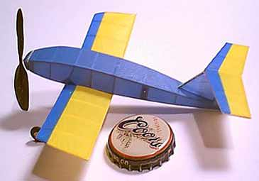

| This wonderful little model of Jason's is a delight to all who have seen it. Very small and light, it still does fly, and very well, thank you.
It was built using the originals of the twerp plans, shrunk to size, and with wood reduced as appropriate. Here are his notes,
I labled it 'Tiny Twerp' so that I could distinguish between photos of it and the 6" version. It is an exact scaled ( 66% ) copy of the Twerp on your page.
Duration - +/- 30 seconds.
Covering is c-paper on the fuse, Polymicro film on the flying surfaces. Everything was airbrushed before covering with acrylic paint. That's all I can think of right now.
Cheers,
|
Copyright 1998, Thayer Syme. All rights reserved